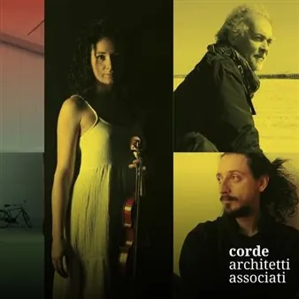

sab 10 ott · dalle 20:30
Polinote Music (in) Factory: Architetture Sonore
Evento organizzato nell’ambito del Polinote Music (in) Factory, il festival organizzato da Polinote che unisce la musica, la creatività e il mondo produttivo con eventi originali e gratuiti in location insolite a Pordenone e provincia. Performance: Musica, fotografia e spazio si…
 Indicazioni
Indicazioni
- Costi e prenotazioni
- Costo non indicato · Prenotazione non indicata
- Programma
- Programma da verificare. Apri la fonte ufficiale per orari e possibili aggiornamenti.
- In caso di maltempo
- Nessuna indicazione specifica pubblicata.
- Note
- Acquisito automaticamente dalla fonte.
L’EVENTO
Descrizione completa
Evento organizzato nell’ambito del Polinote Music (in) Factory, il festival organizzato da Polinote che unisce la musica, la creatività e il mondo produttivo con eventi originali e gratuiti in location insolite a Pordenone e provincia.
Performance: Musica, fotografia e spazio si incontrano in un luogo di memoria industriale e di nuova destinazione Francesca Baldo - violino
Marco D’Orlando - batteria, basso elettrico, voce
Euro Rotelli - progetto fotografico “Il Cantico delle Creature” Il “Cantico delle Creature” di Euro Rotelli, con le sue immagini intense e visionarie, incontra le sonorità tra classico e contemporaneo di Francesca Baldo al violino e Marco D’Orlando alla batteria, basso elettrico e voce.
Il progetto di Euro Rotelli nasce da una riflessione sul rapporto tra uomo, natura e fragilità. Le sue immagini, intense e visionarie, sospese tra bellezza e sofferenza, intrecciano suggestioni sacre e contemporanee e invitano a interrogarsi sul nostro modo di abitare, trasformare e custodire il mondo che ci circonda.
La musica dialoga con queste immagini e, insieme, si misura con lo spazio della Marmeria, che con la sua storia e la sua trasformazione diventa parte integrante dell’esperienza. Un intreccio di linguaggi tra spazio, suono e immagine. Intervengono:
Alessandro Santarossa – socio fondatore, Corde Architetti Associati
Francesco Bearzatti – direttore artistico Polinote Music (in) Factory
Euro Rotelli – fotografo Un momento di confronto dedicato alla storia della Marmeria, al percorso di riconversione dello spazio e al dialogo tra progettazione, rigenerazione e linguaggi artistici. LA MARMERIA · Spazio, musica e fotografia
C’è una storia di trasformazione già scritta nelle pareti di questo luogo: La Marmeria, un’ex struttura produttiva, è oggi la sede operativa di Corde Architetti Associati, che dal 2021 l’ha riconvertita in uno spazio dedicato al lavoro, alla progettazione e alla ricerca. Nel 2024 è diventata inoltre progetto pilota di BOXinBOX, piano strategico per la riconversione del patrimonio industriale dismesso in microcomunità, nell’ambito dell’ecosistema dell’innovazione iNEST e finanziato da NextGenerationEU.
È in questo spazio, che ha cambiato funzione e continua a trasformarsi, che prende vita un incontro tra architettura, fotografia e musica. Ingresso gratuito con prenotazione obbligatoria (tramite la Piattaforma Ufficiale del Festival o su Eventbrite ) fino ad esaurimento posti.
IL PROGRAMMA
Programma e orari
Appuntamenti raccolti dalle fonti elencate. Dove manca un orario, non è ancora disponibile in questa scheda.
Programma pubblicato
- Dal 2026-10-10 al 2026-10-10
INFORMAZIONI UTILI
Prima di partire
- Controllare la fonte prima di partire.
ORGANIZZAZIONE